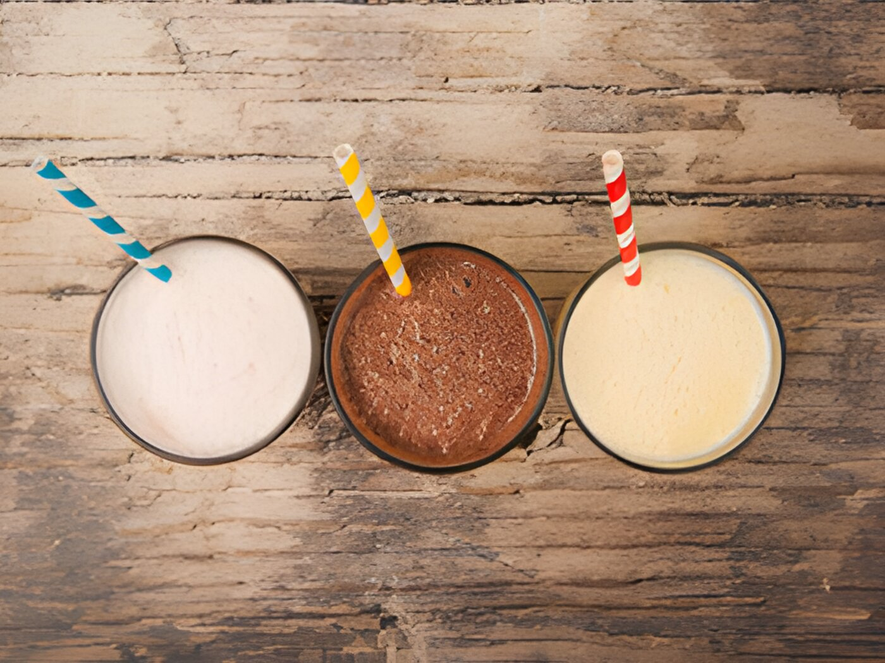
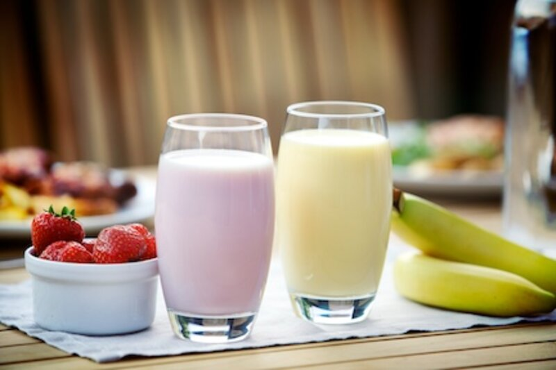
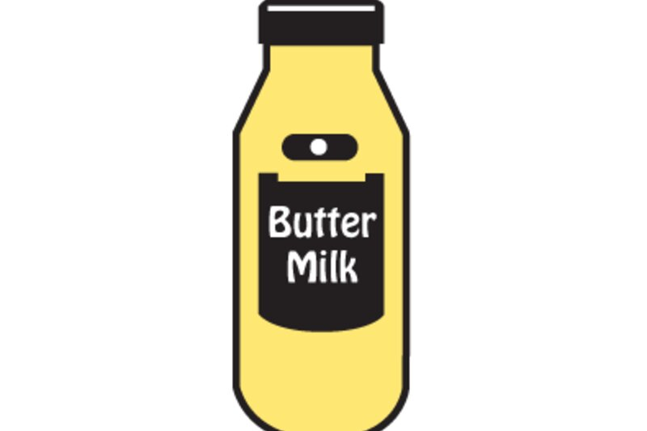
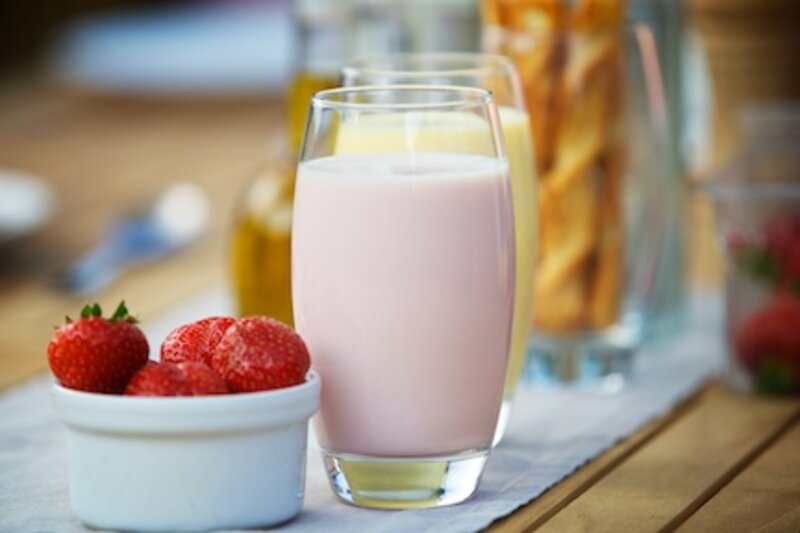
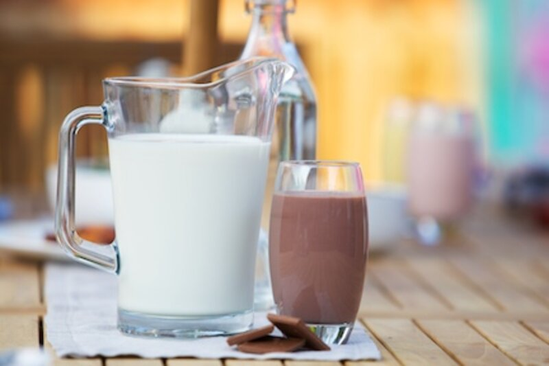
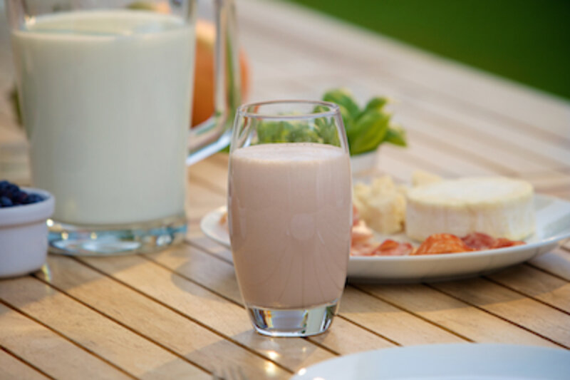

Product area
Milk drinks include fruit and dairy free
Milk drinks have become a popular product in the minds of both adults and children. Offering a wide range of chocolate or fruit flavours and seasonal variants, these drinks are often preferred to fizzy drinks by parents when.
Advertising in this area typically references these products as a good source of Calcium and other nutrients for children. Often Sweet and colourful their appeal to children is obvious. At the other end of the scale, fortified whey drinks offer a clean and refreshing healthier option to adults.
Today, milk drinks include a number of variations and include flavoured, milkshakes, acidified fruit milk drinks and for those who are lactose intolerant, dairy alternative milk drinks.
Click on the items in the cabinet opposite to view the milk drink solutions that we can offer.
Applications
7 product types in this area.
Every one of these is a formulation route we have already walked. The detail page tells you what the product has to do and where the technical work usually sits.

Acidified drinks
Acidified or fruit drinks are generally low viscosity, refreshing drinks, based on yogurt.
Open
Buttermilk drink flavoured
Open
Dairy alternatives
Dairy alternatives or dairy and lactose free milk products have been developed to cater for.
Open
Flavoured milk drinks
Flavoured milk drinks and chocolate milk drinks are sweetened dairy drinks, typically made with.
OpenFruit dairy drinks
Open
Shakes
Milk shakes have been enjoyed since the early 1900s, and were originally made by mixing milk.
OpenWith coffee
OpenBring us the product.
Tell us what it has to do, how it is produced and where it currently fails. We will tell you what is possible.